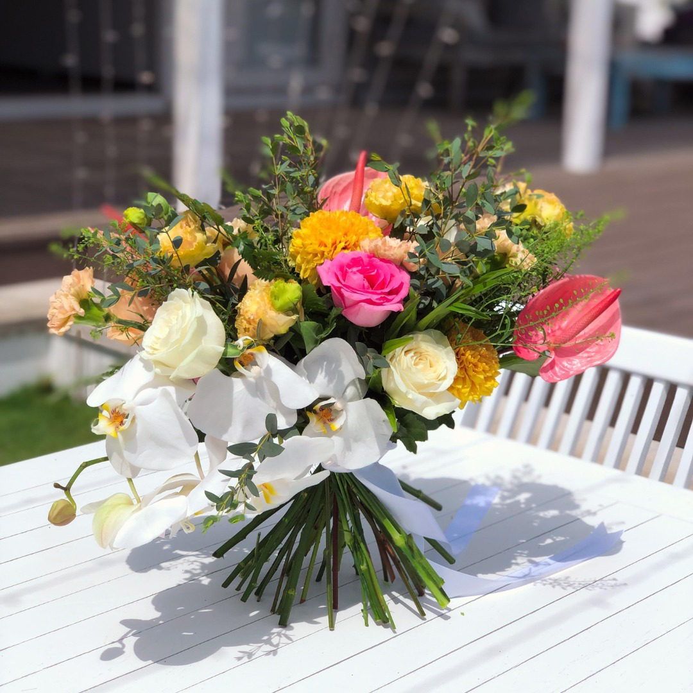

About Us
Our Passion for Flowers
Kirim Bunga Bali is more than a flower shop; it's an expression of love, nature, and the vibrant spirit of Denpasar. With each meticulously arranged bouquet, the shop invites you to experience Bali's blossoming soul and carry a piece of the island's beauty into your moments of joy, celebration, and reflection.
Whether you're celebrating a special occasion or simply expressing your heartfelt sentiments, our blooms are thoughtfully curated to convey your emotions with grace and charm. Join us in spreading joy and enchantment through the language of flowers.
Our excellent products are ready to meet your needs such as
- Vase Flowers
- Flower Boards
- Flower Bouquets
Let Kirim Bunga Bali be your choice for floral moments that transcend ordinary gestures and embrace the extraordinary.